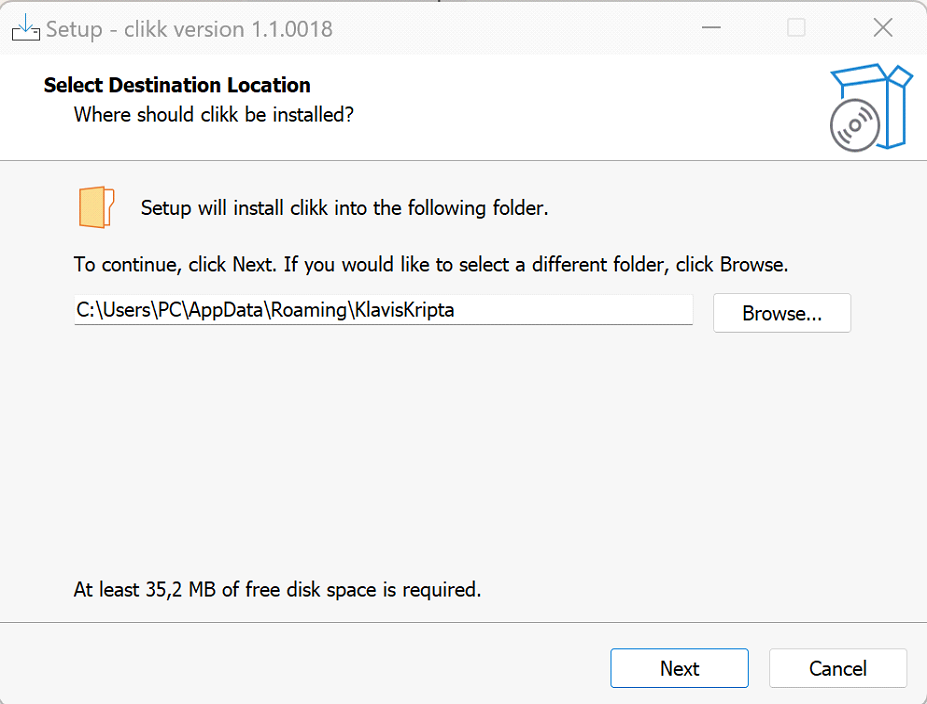
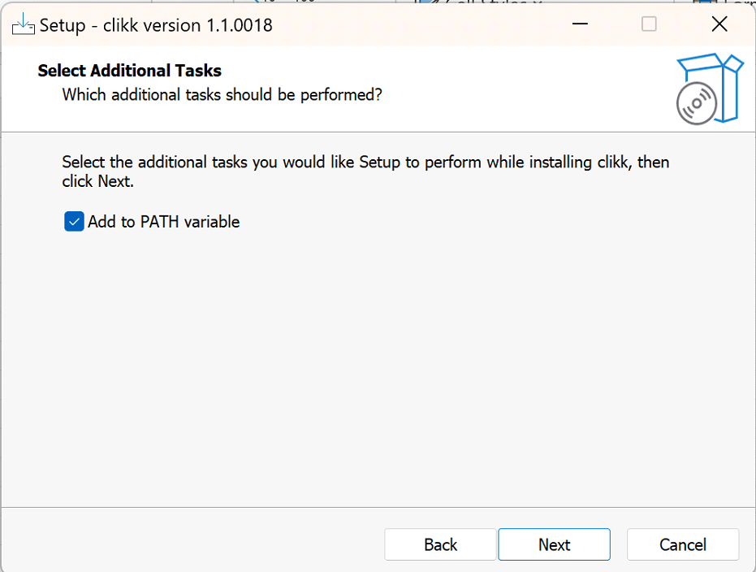
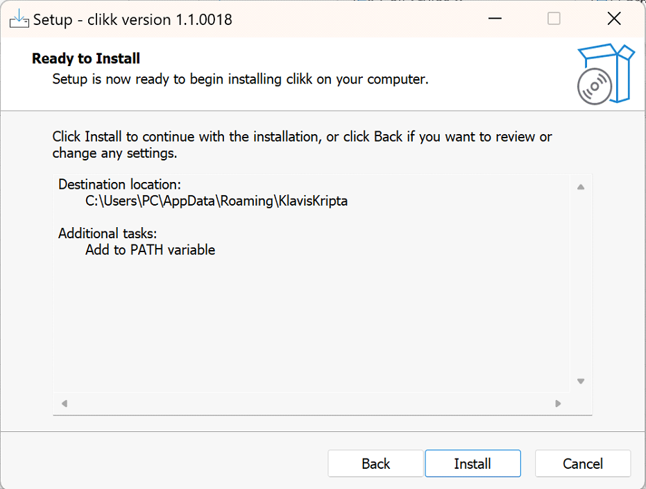
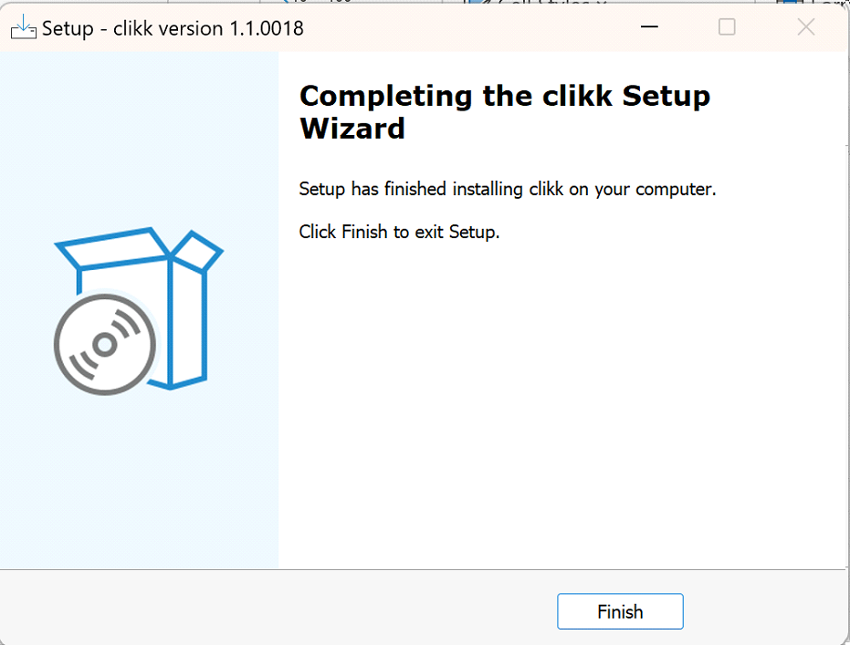

Installing CLIKK
Important
Before running the installer, perform an integrity check first. Also, make sure that the installer is appropriate for the machine’s OS.
Note
Please contact support@klaviskripta.com if any problems were encountered during installation.
Red Hat Enterprise Linux
If the smartcard reader driver has not been installed, install that before starting CLIKK’s installer.
Download the smartcard reader driver (
acsccid-linux-bin-1.1.10-20230804.zip) from ACS’s website.Extract the package.
$ unzip acsccid-linux-bin-1.1.10-20230804.zip
Navigate to the
acsccid-linux-bin-1.1.10-20230804.zip/epel/9directory and install the RPM.$ cd acsccid-linux-bin-1.1.10-20230804.zip/epel/9 $ sudo dnf install pcsc-lite-acsccid-1.1.10-1.el9.x86_64.rpm
Enable the pcsc-lite service.
$ sudo systemctl enable pcscd.service --now
Make sure that the pcsc-lite service is running by examining the output of the following command.
$ sudo systemctl status pcscd.service
After confirming that the pcsc-lite service is running, CLIKK installation may be initiated.
Install CLIKK directly from the RPM.
$ sudo dnf install clikk-2.0-0000.el8.x86_64.rpm
Configure CLIKK so it can reach the KK-Manager instance. To do this, the administrator must have the host address and port ready.
$ clikk conf server --kk-manager-host=<host address> --kk-manager-port=<port>
Close and reopen the terminal to enable CLIKK tab completion.
Windows 10/11
Note
It is recommended to use PowerShell with CLIKK.
On Windows, simply execute CLIKK’s installer to start the installation process.
Select the folder where CLIKK will be installed. Click “Browse” if CLIKK should be installed in a different location. Click “Next” to continue.
Tick the “Add to PATH variable” checkbox to allow CLIKK to be ran no matter the current working directory. Click “Next” to continue.
Click “Install” to continue with the installation, or click “Back” to make changes to the installation settings.
Wait until the installation process is complete.
Installation has been completed. Click “Finish” to exit.
Configure CLIKK so it can reach the KK-Manager instance. To do this, the administrator must have the host address and port ready.
$ clikk conf server --kk-manager-host=<host address> --kk-manager-port=<port>